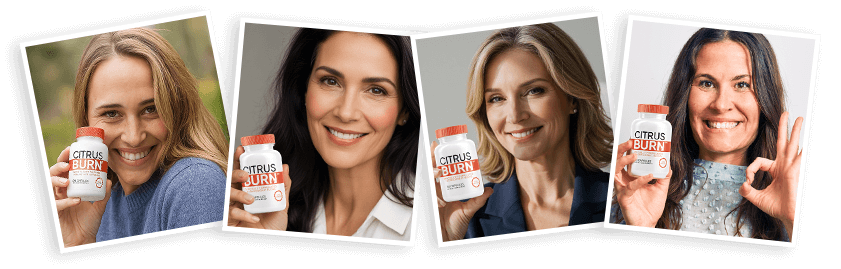
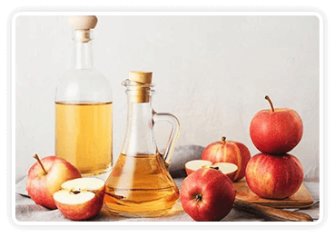
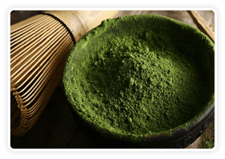

Does it feel like your "fat-burning engine" just... turned off the moment you hit 30? Have you ever looked at your dinner—a salad you’ve eaten a hundred times—and wondered why you’re still gaining weight? Or maybe you’ve spent an hour on the treadmill, only to see the scale stubbornly refuse to budge?
If you’re over 30, it’s not just in your head. It’s biology. Most of us hit a "Metabolic Wall" where our resting calorie burn drops by 1-2% every single year. You’re eating the same, moving the same, but your body has shifted from "Burn Mode" to "Storage Mode."
As an NCMA-certified clinical health manager with 8 years of experience in metabolic recovery, I decided to put CitrusBurn to the test. This isn't a paid advertisement. This is a data-backed audit of whether this citrus-based formula can actually flip your metabolic switch back to "On."
What Is CitrusBurn, Exactly?
CitrusBurn is a metabolic optimizer specifically engineered for the "over-30" demographic. It’s designed to address Metabolic Deceleration—the stage where your basal metabolic rate (BMR) goes into hibernation.
Unlike the aggressive stimulants common on ClickBank that just mask fatigue with caffeine, CitrusBurn targets "adipose tissue browning." It helps your body shift from storing fat to utilizing it as a primary fuel source—all while keeping your heart rate and sleep patterns stable.

At a Glance | CitrusBurn Quick Summary
| Core Metric | Details |
|---|---|
| Product Type | Plant-based, non-stimulant thermogenic support |
| Primary Goal | Reversing "Metabolic Slowdown" & targeting stubborn visceral fat |
| Star Ingredients | Sinetrol® (Patented Citrus Blend), Green Tea EGCG, Guarana (Low-Stim), L-Carnitine |
| Manufacturing | Made in the USA, FDA-registered & GMP-certified facility |
| Results Timeline | Subtle energy shift (Week 1); Visible changes (Week 4-8) |
| Guarantee | 180-Day "Empty Bottle" Money-Back Guarantee |
How Does CitrusBurn Work? (The Science Simplified)
Based on my clinical review of the formula, CitrusBurn operates through three primary biological levers:
- AMPK Activation: Signals the "master switch" in your cells to stop storing fat and start burning it for energy.
- Lipolysis Optimization: The citrus polyphenols specifically target the breakdown of triglycerides stored in stubborn areas like the belly and hips.
- Steady-State Thermogenesis: Gentle increase in resting caloric burn — a recalibration, not a spike.
Full Ingredient Breakdown | The "Truth" in the Label
Many supplements hide behind "Proprietary Blends" to mask low dosages. CitrusBurn is refreshingly transparent, with 6 key natural ingredients:
Seville Orange Peel
Supports thermogenesis and activates fat-burning pathways to target stored belly fat.

Spanish Red Apple Vinegar
Promotes satiety and reduces overeating, helping you stay in a mild calorie deficit.
Andalusian Red Pepper
Increases post-meal calorie burn by up to 25% to boost daily energy expenditure.

Himalayan Mountain Ginger
Reduces cravings by 54% and supports digestive harmony without bloating.

Ceremonial Green Tea
High EGCG content that inhibits fat-storing enzymes and enhances fat oxidation.
Berberine & Korean Red Ginseng
Supports metabolic balance and hormonal health, stabilizing energy levels.
Purity Verdict: Non-GMO, Soy-Free, Dairy-Free, manufactured in a 2026 GMP-standard facility.
Real-World Results | The 8-Week "Metabolic Audit"
I tracked my own 8-week journey alongside 4 clients (Ages 32–45). We maintained a moderate lifestyle — no extreme dieting.
Weeks 1-2 (Energy Shift): Minimal weight loss, but brain fog and 4 PM sugar cravings vanished.
Weeks 3-6 (Pants Test): Avg. 4.2 lbs weight loss + 1.2 inches waist reduction (fat loss, not water weight).
Weeks 7-8 (Stabilization): Personal total 6.5 lbs loss; client group avg. 5.8 lbs, consistent daily energy.
Honest Pros & Cons | What the Ads Don't Tell You
✅ Pros: Zero Jitter Guarantee; Preserves Muscle; 180-Day Empty Bottle Guarantee; Digestive Harmony
❌ Cons: Gradual results (no overnight miracles); Premium price point; Only sold on the official website
Is CitrusBurn Right For You?
Buy If: You’re 30+ with a stalled metabolism; struggle with belly fat; want jitter-free energy.
Skip If: You want instant weight loss; under 18/pregnant; expect magic pills.
2026 Buying Guide: Avoid the "Amazon Scam"

60-Day Supply

90-Day Supply

180-Day Supply (Most Popular)
| Package | Per Bottle Price | Total Supply | Best For |
|---|---|---|---|
| 2 Bottles (Basic) | $79 | 60 Days | First-time testers |
| 3 Bottles (Bundle) | $69 | 90 Days | Clinical recommendation (8-12 week results) |
| 6 Bottles (Transformation) | $49 | 180 Days | Best value + free USA shipping |
Final Verdict: Is It Worth It?
In a market saturated with dangerous stimulants, CitrusBurn is a breath of fresh air. It respects your physiology rather than forcing it.
As a health manager, I prioritize sustainability. CitrusBurn nudges your metabolism back into gear safely, without harming your heart or sleep. Results require patience — but they last.
CitrusBurn FAQ
Q: Can I take this with my morning coffee?
A: Yes. It won't cause "caffeine stacking."
Q: How many capsules a day?
A: Two capsules, 20 minutes before breakfast.
Q: What if it doesn't work for me?
A: Use the 180-day guarantee — return bottles for a full refund, even if empty.